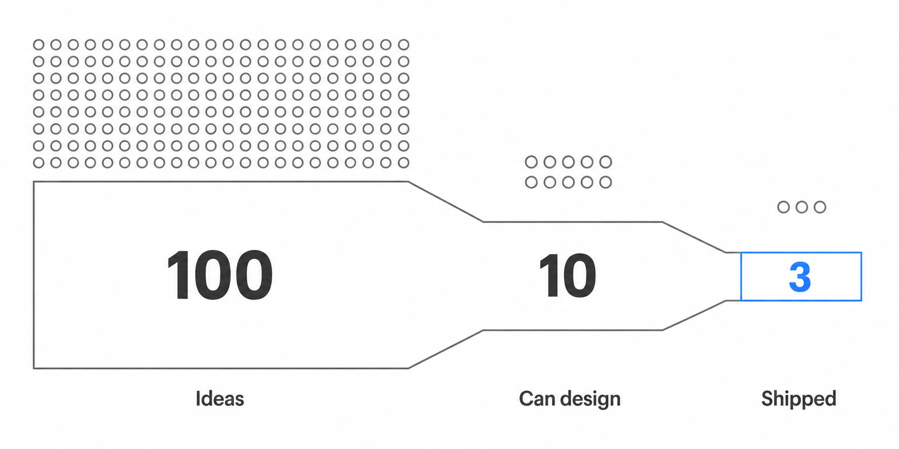
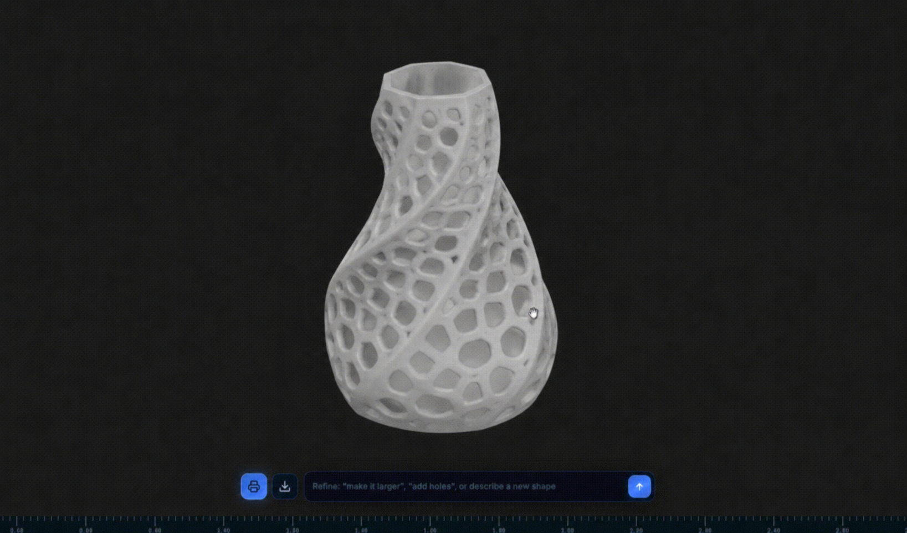

There is a global engineer shortage. With the current trajectory, one in three engineering roles in the US alone will be unfilled each year through the 2030s (BCG, 2023).
But there is no shortage of people with ideas.
The opportunity to turn ideas for physical products into reality is currently gatekept by CAD software that costs upwards of $2,000 per year, requires years of training for professional use, and is built on technology that is over 20 years old.
As a result, the ability to design and manufacture physical products remains available to a small professional class, but inaccessible to billions of people with genuine ideas, creativity, and access to cheap 3D printers.

The Solution
The solution is two-fold: make design accessible, then make manufacturing accessible.
1. Design
Meshless lets anyone describe what they want in plain language and get back a precise, printable 3D model in a few seconds. No CAD knowledge or previous experience is needed.

Meshless is made to be expressive. Users can describe potentially complex physical descriptions, a specific style, intent or even mood and have it accurately represented in their designs.
This is because Meshless uses both B-Rep and implicit functions to represent geometry, so it excels at both precise CAD and expressive, organic, smooth, procedural shapes or surface textures. These are either impossible or require hours of expert work in traditional CAD tools. Meshless can generate them in a couple of seconds.
Here’s a quick comparison of Meshless with the current tools on the market.
| Tool | AI interface | Printable Designs | Beginner-friendly |
|---|---|---|---|
| Fusion 360 | Limited copilot | Yes | No |
| Tinkercad | None | Limited | Yes |
| nTop | None | Yes | No |
| Shap-E / Point-E | Text | No | Yes |
| Meshless | Natural language | Yes | Yes |
The existing tools each fail to address the design and manufacturing bottleneck properly. Professional tools like Fusion 360 and SolidWorks require years of training and are built for engineers, while beginner tools like Tinkercad are accessible but limited to simple, blocky geometric primitives.
2. Manufacturing
The second part of the solution is making the printing process just as easy. As part of the product, Meshless will build a network of 3D printers that allows users to have their designs physically manufactured cheaply and shipped to them in a few days without needing to own the required hardware.
The final result is that billions of creative people can now turn their ideas into manufactured products. Just as Shopify allowed anyone to launch an online store, Meshless can allow anyone to launch a physical product.
A mechanic can generate a custom bracket. A parent can design a custom toy. A cyclist can make a custom bike mount. A small business can prototype a new product.
This is the vision of Meshless.
The demand is already there. The 3D printing market is growing at 17% annually, driven by demand for customised products. These are people who want to make things, but most simply have no way to design them.
About Me
I’m Oliver. I’m working on Meshless to make the design and manufacturing of physical products accessible to anyone.
I founded my first startup at 16 where I used voice AI to automate the role of receptionists in medical practices. I built the product and did the sales myself (which mostly involved walking into local practices and demoing the product), and I saved local businesses each over $2,000 per month in hiring costs.
Since then, I have become obsessed with how to use ML models to represent and generate 3D geometry for CAD.
For the last 18 months, I’ve conducted hundreds of experiments and side projects to try to understand why and how frontier AI models completely fail at complex 3D design.
During this research I recognised a significant gap in the market which recent AI development now makes possible to solve, and I am currently finishing the first prototype of my solution.
I am pursuing this project part-time while studying and with very little funding. For commercial use, collaboration or anything else, please reach out.